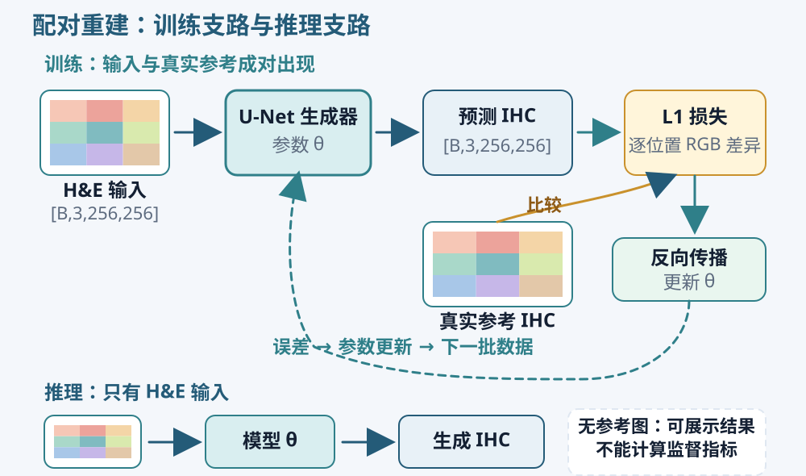
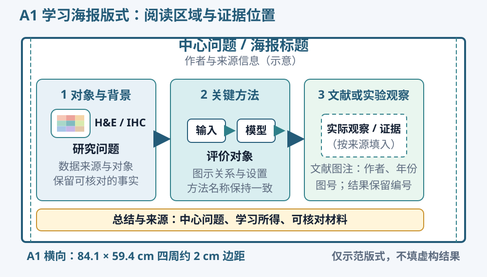

图像重建与损失
图像回归的输入与输出
猫狗识别为一张图像输出类别分数，分割为每个位置输出类别信息。图像回归则为每个位置预测连续数值。在 H&E–IHC 中，输入是 H&E 的三个 RGB 通道，输出是对应 IHC 的三个 RGB 通道，目标值来自真实参考图像。
例如，一批缩放为 256×256 的图块可以表示为 [B, 3, 256, 256]，B 是批量大小。输出保持相同的空间尺寸和三个通道。这里的三个数表示红、绿、蓝颜色分量，不要求相加等于 1。若预处理把参考图像归一化到 0—1，模型输出与评价也需要使用相同范围。
U-Net 的编码器、解码器和跳跃连接可以继续用于图像回归。编码器整合较大范围的图像信息，解码器恢复空间尺寸，跳跃连接传递相应尺度的特征。输出层需要匹配连续颜色目标。网络的结构和训练目标共同决定它学习什么，不能只因为网络名称相同就认为两个任务完全一样。

训练时，H&E 经过模型得到预测图，再与真实 IHC 计算误差；反向传播根据误差调整参数。推理时只输入 H&E。画流程图时，将真实参考连接到损失计算，把预测路径和参数更新的关系标清楚。
L1 损失与颜色误差
L1 重建损失逐个比较预测图和参考图对应位置的 RGB 数值，取绝对差，再求平均。它也可以理解为 RGB 平均绝对误差。若某个通道的参考值为 0.8、预测值为 0.6，这个位置在该通道上的绝对差就是 0.2。整张图的损失对所有参与计算的位置和通道汇总。
L1 直接约束颜色与位置的对应关系。配对错位时，即使两张图具有相似结构，也会产生较大逐像素差异；大片白背景接近时，全图平均误差可能显得较低。因此训练损失下降需要结合可见图像和评价范围理解。
Sigmoid 可以将输出映射到 0—1，但此时它约束的是颜色数值范围。它并没有把三个 RGB 通道变成三个互斥类别。选择输出层和损失时，先写出目标张量的含义、形状和范围，再检查模型是否与它一致。
在 Kaggle 中练习连续图像输出、L1 计算和一次参数更新。观察预测、参考和误差的形状，修改少量像素后比较损失变化。完成这些局部练习后，再为自己的目标项目编写数据读取、训练和结果保存过程。
配对变换与验证集
输入和参考需要接受相同的几何变换。如果 H&E 随机翻转而 IHC 保持原样，它们的空间关系就被破坏了。随机裁剪、旋转和翻转都应共享对应参数；标签或目标的处理方式要依据它们的实际含义选择。IHC 是 RGB 参考图像，任意改变它的颜色会改变预测目标。
验证集用于观察未参与参数更新的数据，并选择训练轮次或设置。保存验证表现较好的权重后，使用固定权重评价测试集。验证时关闭训练专用行为并停止梯度计算；需要区分模型的训练和评价状态，以及梯度是否被记录，这两项作用不同。
保存配置时写明数据清单、划分、输入尺寸、模型结构、批量大小、学习率、训练轮数和随机种子。每次实验使用独立名称，保留训练及验证损失记录。重新运行时能够确定读了哪些数据、用了哪份权重，才能比较两次结果。
重建评价与实验
主要指标与补充指标
RGB MAE 对各位置与通道的绝对差求平均，越低表示当前数值范围下的平均颜色差越小。0—1 图像上的 MAE 为 0.05，表示平均通道绝对差为 0.05，不能解释为“95% 的细胞正确”。汇总时注明是先计算每个图块再求平均，还是对所有像素一起平均；不同尺寸的图块在两种计算中可能具有不同权重。
PSNR 根据均方误差及规定的动态范围计算，单位是 dB，通常越高表示像素误差越小。比较前必须统一图像范围，0—1 与 0—255 不能直接混用。预测和参考完全一致时，均方误差为零，PSNR 会达到正无穷；统计时记录这种情况及有效数量，不把无穷值直接填成零。
SSIM 在局部窗口比较亮度、对比度和结构相关信息。记录所用窗口、颜色通道处理及图像范围，同一比较采用相同设置。它提供了颜色绝对误差之外的一种观察，但仍会受到配准和背景区域影响。
起步实验以 RGB MAE 为主要指标即可，再选择一项理解清楚的补充指标。增加指标前先解释它在比较什么，以及可能漏掉什么。每个指标都应与同位置图像一起阅读，不只保留一个汇总分数。
组织区域与染色相关观察
病理图像常包含白背景。全图误差会把背景也计算在内，如果想进一步观察组织区域，可以在真实参考上定义固定的非白背景掩膜，并让所有方法使用同一个范围。例如，RGB 最小通道值低于某个预先确定阈值的像素可以组成简单非白区域。这种区域还可能包含伪影，命名时写“非白背景区域”，不称为肿瘤或细胞分割。
参考图没有有效非白像素时，区域指标应记录为无有效区域，同时保留全图指标。阈值和范围应在查看测试结果前确定。若每个预测自己选择评价区域，各方法就可能比较不同位置，结果难以解释。
DAB 颜色分量可以作为进一步学习内容。颜色分离依据一组染色方向估计相对分量，其数值会受染色、扫描和预处理影响。棕色面积差较小，也可能伴随位置错误；逐位置误差与面积差描述不同现象。初次项目先把 RGB 评价、配对显示和局部检查完成，再按问题需要增加这类分析。
固定样例与局部失败
在查看方法分数前，先按样本编号或其他固定规则选一组展示样例。它们用于稳定比较不同实验。计算结果后，再找误差较大的样例，单独标为失败分析。固定样例与失败样例的选取规则都写进图注，避免只展示最漂亮的结果。
每组图保持相同顺序：H&E 输入、真实参考 IHC、参照方法、学习模型。先比较完整组织轮廓，再观察局部核背景、空隙和棕色区域。放大同一位置时，各栏使用相同坐标和缩放比例，在原图上画出对应框。
记录具体观察，例如“配对 A 的右上方空隙出现额外棕色”“配对 B 的组织边缘比参考更平滑”。接着检查输入与参考是否有可见错位、预处理是否一致，以及现象是否也出现在其他图块。把观察和原因推测分别写，后续实验才能针对原因展开。
处理没有配对参考的新 H&E 时，可以展示输出并记录来源和外观变化；MAE、PSNR 等有监督指标需要对应参考才能计算。不要把新图生成得顺利当作已经验证了预测准确性。
在 Kaggle 中练习读取逐图指标、绘制对照图和保存证据索引，检查顺序、数值范围及样本编号。练习中的人工数值用于理解操作；将这些方法应用到自己的项目后，保存实际测得的逐图结果，再生成汇总表与对照图。
参照方法与受控比较
参照方法提供一个明确的比较起点。例如，将 H&E 原图直接作为输出，能够观察完全不进行染色转换时的图像误差；它称为恒等参照。再与自己训练的配对重建模型比较，可以检查模型是否学到了比保留输入更合适的预测。
选择一个问题做受控比较。可以比较是否使用配对翻转增强，也可以比较同一网络的两种容量。一次只改变所研究的因素，保持数据划分、评价样例、主要指标和权重选择规则一致。记录实际耗时，较大的网络和相同轮数未必对应相同计算量。
条件对抗训练适合作为后续扩展。生成器预测 IHC，判别器查看输入与真实或生成目标的组合，给出训练反馈。它可能改变局部纹理，也增加训练难度。希望研究它时，先读 pix2pix 的目标和更新方式，再设计与 L1 重建的公平比较。本项目的必做任务不要求使用 GAN。
独立项目：H&E–IHC
使用 BCI 的 H&E 与 HER2-IHC 配对数据，在自己的 Kaggle Notebook 或本地新建项目。数据从 BCI 作者公布的来源获取，保存来源信息和使用说明。课程知识练习负责解释局部操作，下面的目标项目需要你自己组织读取、训练、评价和保存。
输入与输出。 输入是一张 H&E RGB 图块，输出是同一区域的预测 HER2-IHC RGB 图像。固定输入尺寸及数值范围，保存真实参考、生成结果和样本编号。测试输出应能追溯到所使用的数据清单与模型权重。
数据要求。 检查配对、方向、尺寸与重复样本，保留官方训练和测试来源信息。训练来源中划出验证集，并按照已核实的患者或切片标识检查集合关系。若没有这些标识，记录已有信息和实际划分方式。资源有限时可以使用固定子集，写明各集合的实际数量和选取规则。
最低实验要求。 用 PyTorch 实现并训练一个配对图像重建模型，使用明确的连续图像损失；设置一个能够解释的参照方法；完成至少一次单变量比较。不同设置共用数据划分和评价规则，权重由验证集选择。模型结构、训练循环和结果组织由你自己实现，可以查阅框架文档并在材料中记录借鉴来源。
评价与提交。 保存训练及验证记录、所选权重、逐样本 RGB MAE 与汇总表、固定样例对照图及局部失败记录。补充一份简短实验说明，交代问题、数据、设置、主要观察和依据。图表里的数值与保存的结果表一致，全部材料使用统一实验名称。
完成后，让另一位同学根据说明找到一组输入、它的参考和模型输出，并定位支撑主要观察的表格与图像。若材料中缺少编号、设置或来源，应在提交前补全。
学习海报
学习海报的内容
学习海报用于展示你已经理解的知识，以及能够用资料或实验支持的观察。读者应能迅速找到研究对象、关键概念、方法关系和学习所得。它可以包含病理图像知识、文献比较、自己的项目设计及实际结果，重点由你准备解释的问题决定。
先写一句海报中心问题，例如“配对图像重建怎样学习 H&E 与 HER2-IHC 的对应关系”。围绕它选择三至四个内容区域：对象与背景、关键方法、文献或实验观察、总结与来源。把长参数表、操作日志和大段代码留在项目材料里。海报保留理解图示和结论所需的信息。
文献图像与个人结果要区分。使用文献图时注明作者、年份、图号及原图或改编关系，并检查使用条件；使用自己的结果时保留样本编号、方法名称和实际实验设置。未完成的实验可以写成计划，但不填写想象的指标或预测图。
海报中的一张中心图应占据足够空间。可以把真实配对、模型结构和评价对象组织在同一阅读区域，也可以展示几种文献方法的差异。文字解释图中具体对象，避免把已经在图中说明的内容再写成长段。
A1 画布与排版操作
在 PowerPoint 中创建空白演示文稿，选择“设计—幻灯片大小—自定义幻灯片大小”，把宽度设为 84.1 厘米、高度设为 59.4 厘米，选择横向。先设画布再排版，可以减少后期整体缩放。保留一页作为海报，其他草稿页另存或在导出时排除。

自定义大小对话框中的宽、高使用实际长度；如果当前界面单位是英寸，输入带单位的 84.1 cm 和 59.4 cm，再核对换算结果。点击确定后重新查看尺寸设置，确认采用的是横向 A1。
页面四周先留约 2 厘米边距，顶部安排题目与作者，下方按内容划分两至三个阅读区域，底部放必要参考文献。打开“视图”中的标尺、网格线和参考线，拖动参考线确定共同边界。区域宽度可以调整，标题、图片和正文应对齐到同一组边界。
标题可以从 58—72 磅开始设置，区域标题约 30—36 磅，正文与图注约 22—26 磅，作者约 26—32 磅，再按实际内容和阅读距离调整。先建立清楚的字号层级，文字放不下时精简内容或调整区域，不持续压小全部字号。
选择多个对象，使用“形状格式”中的“对齐”以及“横向分布”“纵向分布”统一位置和间距。在“大小与位置”中输入图片的宽度，并保持纵横比。流程中的相关对象可以组合，修改内部结构时取消组合。使用连接符连接形状，移动形状后检查线端是否仍然连接正确。

需要复习对象操作时，可打开第 2 章 PPT 图文实践，对照大小、对齐、组合与图片裁剪的步骤。使用现成主题前，先检查它是否适合海报的纸张尺寸和阅读距离。
插入结果图后，按海报实际显示尺寸检查坐标、图例和图注。照片保持真实颜色；同类方法在不同图中沿用同一颜色。局部框不能遮挡关键组织结构，放大图应标出原始位置。页面上的每个图、框和文本都保留为可编辑对象。
海报导出与检查
先保存 PPTX 源文件，再通过“文件—导出”或“另存为”输出 PDF。导出选项只选择最终海报页。重新打开 PDF，检查页面尺寸、中文字体、上下标、图像清晰度和连接符是否完整，确认没有对象被裁掉。
先把整页缩放到屏幕可见，检查题目、中心图和阅读顺序；再放大到实际阅读尺寸，检查正文、图注和图例。让同学看三十秒，复述海报在讲什么；再给两分钟，请他指出一项主要观察及其来源。根据他找不到或误解的位置调整版面。
提交可编辑 PPTX 与展示 PDF。引用图保留来源，个人实验图保留编号，海报中的关键数字能够在结果表中找到。学习海报不要求堆满所有内容，清楚说明几项确实掌握的知识更便于交流。
剑桥组汇报 PPT
加入剑桥组的同学需要完成汇报 PPT。 汇报内容依据自己的学习与实践组织，建议约六分钟、六至八页。其他同学完成学习海报及项目材料即可。
开场用真实 H&E/IHC 图像说明对象和问题。随后介绍文献学习得到的关键认识、数据与划分、方法或实验设计，再展示实际观察及局部案例。最后说清已经学会什么，以及下一步准备验证的问题。尚未完成的部分标为计划，已有结果给出相应证据。
每页安排一项清楚的主题，图片和图表占主要空间。标题可从 28—36 磅开始设置，正文约 20—24 磅，图中标签在投影下仍应清晰。通过统一版式或幻灯片母版固定标题、页码及页边距；图片保持比例，方法名称与海报一致。
讲结果时，先说明图中对象和坐标，再指出差异，最后解释它与问题的关系。展示局部案例时先让听众知道放大区域在原图的哪里。详细参数、补充图和阅读证据表放在备份页，需要回答问题时再使用。
至少完整排练一次，记录总时长，修改一处解释不清或信息过密的页面。交付 PPTX、展示 PDF 和简短讲述提纲。每张病理图能够找到来源，每个主要数字能够找到结果表，听众便能继续核对和讨论。